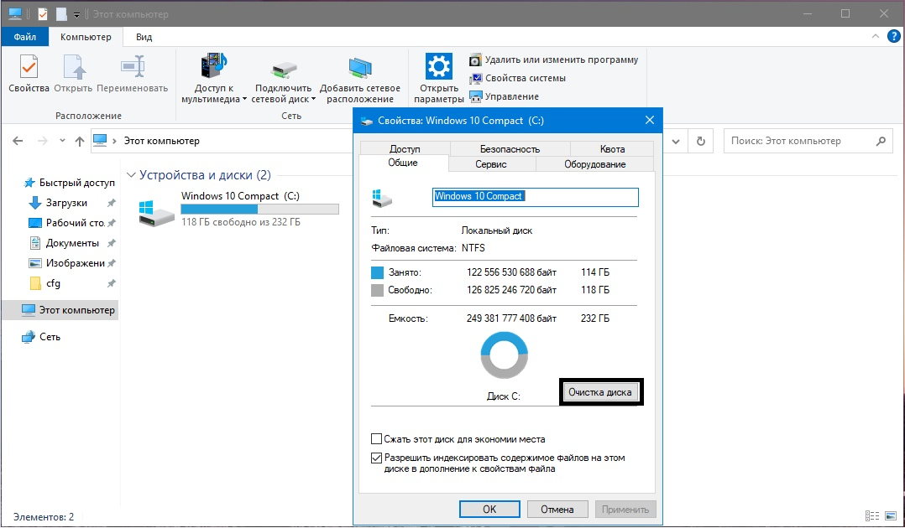
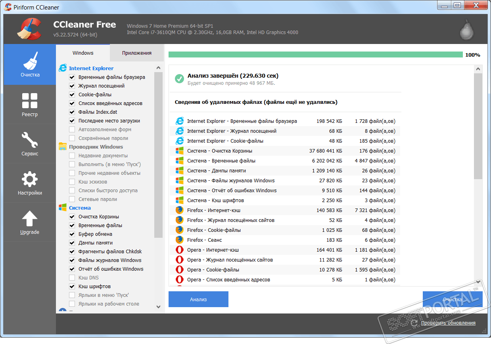
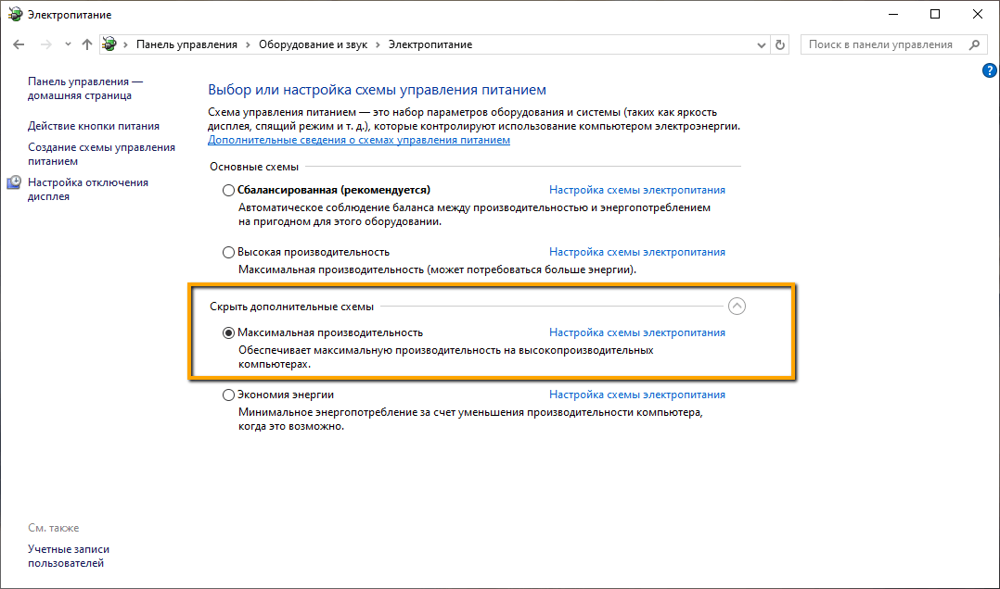

Очистка Windows
Существует много программ для очистки диска но мы остановимся на основных моментах очистки, которых вполне хватит для наших целей.Для начала можно вручную, через диспетчер задач, почистить программы в автозагрузке чтобы исключить утечку оперативной памяти на программы, которые сейчас и в фоне системы нам не нужны. Также с помощью встроенной утилиты можно удалить старые версии системы и прочий мусор

С помощью программы Ccleaner можно удалить ненужный кеш браузера и системы а также почистить реестр, что мне лично не раз убирало фризы и большую задержку в игре. Также есть универсальная программа которая может также почистить вашу систему и заодно отключить кучу ненужных вам функций для рекламы и слежки в системе.

Windows Defender
Антивирус, конечно, важная вещь, но мы гонимся за производительностью, поэтому по этой ссылке мы можем его отключить.Отключаем DVR
Игровой оверлей от windows (XBox) выполняет примерно ту же функцию, что и nvidia shadow play, только значительно нагружает систему. Чтобы его отключить нужно скачать этот файл, переименовать расширение в .reg и запустить. Таким образом мы получим прирост производительности и отключим оверлей.
Включаем режим боевого трансформера
С помощью команды
powercfg -duplicatescheme e9a42b02-d5df-448d-aa00-03f14749eb61
включаем режим максимальной производительности в режимах электропитания. Для этого зайдите в поиск системы, найдите powerShell, запустите правой кнопкой мыши от имени администратора, напишите команду и нажмите Enter. Теперь включен режим максимальной производительности